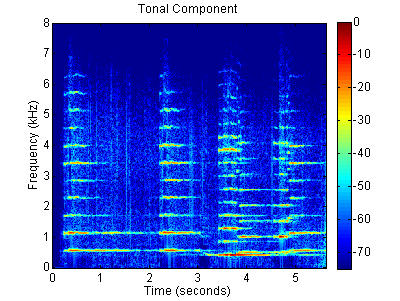
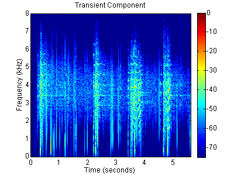

Home
"Algorithms for Audio Decomposition Using Mixed Norms", İ. Bayram, Ö. D. Akyıldız, August, 2012. [.pdf]
The file PDToolbox.zip contains Matlab implementations of the experiments in the manuscript.
Below are some results from the manuscript.
The original signal is an old recording of a kaval tune. The signal contains artifacts due to recording.
Mixture signal (Ney + Darbuka)
The signal is an excerpt from "Taxim Zeybekiko". The signal contains crackles and our aim is to suppress them using the decomposition formulation. This problem could be regarded as a variation of the denoising problem discussed above. Notice that although the noise in this signal (i.e., crackles) is different in nature from the noise in the phonogram signal, it is also far from being Gaussian.
Mixture Signal
Spectrogram of the Mixture Signal
Below are the component separation results with the analysis and synthesis prior formulations.
The same parameters as in the Restoration Experiment above are used (see the Matlab Code).
Analysis Prior : Tonal Component,
Transient Component
Synthesis Prior : Tonal Component,
Transient Component
Heuristic Scheme : Tonal Component,
Transient Component
The spectrograms for the components obtained by the analysis prior formulation :
The spectrograms for the components obtained by the synthesis prior formulation :

The spectrograms for the components obtained by the heuristic scheme :

Here, we are mainly interested in the capability of the model to separate the drums. Notice that this is not necessarily what tonal and transient component analysis aims to achieve.
Mixture Signal
Spectrogram of the Mixture Signal
Below are the component separation results with the analysis and synthesis prior formulations.
The same parameters as in the Restoration Experiment above are used (see the Matlab Code).
Analysis Prior : Tonal Component,
Transient Component
Synthesis Prior : Tonal Component,
Transient Component
Heuristic Scheme : Tonal Component,
Transient Component
The spectrograms for the components obtained by the analysis prior formulation :
The spectrograms for the components obtained by the synthesis prior formulation :
The spectrograms for the components obtained by the heuristic scheme :
Algorithms for Audio Decomposition Using Mixed Norms
Manuscript
Software
Experiments
Restoration Experiment
Two attempts to clean the signal are made.
First, we denoise the signal using mixed norms.
Second, the restoration is performed by separating the artifacts and the tune of interest. See the manuscript for details.
Original Signal,
Denoised Signal,
Restored Signal.
Separation of Ney and Darbuka
Analysis Prior : Ney,
Darbuka
Synthesis Prior : Ney,
Darbuka
Heuristic Scheme : Ney,
Darbuka
Further Results
Another Old Recording
Separation of Percussion